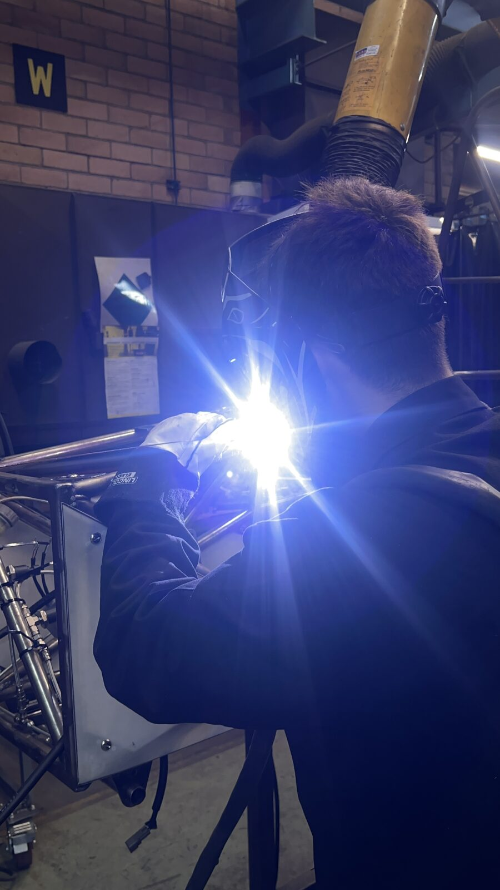
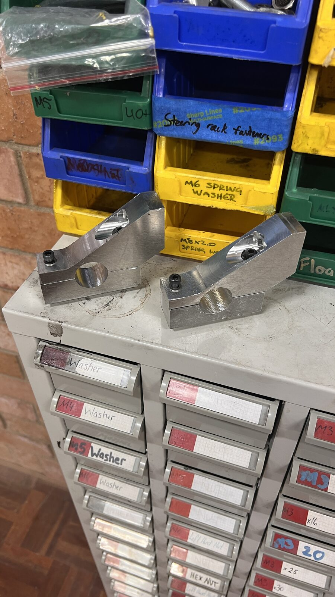
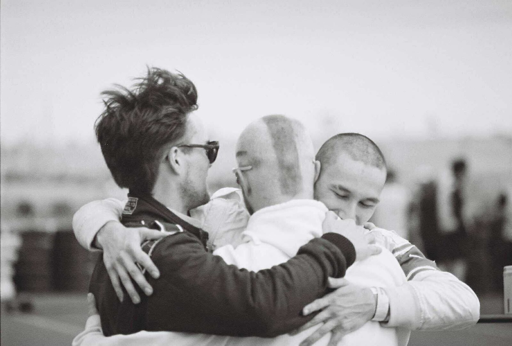

Three years with UTS Motorsports, and what changed about the kind of engineer I want to be.
What were your expectations about your internship before you joined?
I joined UTS Motorsports wanting three things: real responsibility rather than isolated tasks with the interesting parts already resolved, creative freedom, because coursework mostly meant solving problems that already had a known answer, and the chance to actually make physical objects with my own hands. I had done plenty of CAD but had never taken a model, worked out how it would be manufactured, and stood at a mill or lathe and made it. I also wanted genuine team experience, meaning shared deadlines with people who depended on my output. I expected it to be demanding, but I assumed the demand would be mostly technical.
What was the reality? How was it different from your expectations?
The reality was better than I could have expected, and much harder. Over three years I averaged around eight hours a day, five days a week, with full-time study fitted around it. Technically I learned far more than I had pictured: manual mill and lathe, TIG welding in three materials, waterjet and laser cutting, CNC machining and CNC plasma tube notching, 3D printing, composite layup and mechanical testing, and on the design side SolidWorks, Ansys FEA and Altium, applied through design for manufacture, tolerancing and the FSAE rule set. But the things I had not anticipated mattered most: managing and teaching a team of around twenty, recruitment, procurement, presenting at SXSW Sydney, competing at Formula SAE-A, and learning what it takes to build something reliable rather than merely correct on paper.

What lessons were the most important from your internship? Why were they important?
The most important lesson was how to teach and encourage other people to do engineering. I could not build the car alone, and the difference between a team that delivers and one that stalls was whether people felt trusted enough to take work on. The second was the value of process and systems engineering. Our earlier cars failed scrutineering not because individual parts were bad but because integration, schedule and rules compliance were not managed as a system. Once we ran design reviews and tracked interfaces between subsystems, the outcome changed. The third is that having welded a joint or machined a part, I design differently, because I know what is genuinely manufacturable.
What went wrong under your leadership, and what did you change?
The mistake I own most clearly was on the 2025 chassis. I designed the frame around bends at three times tube diameter, because that is what the manual bender was specified to produce, and I never verified it. Partway into the build the tubes stopped matching the CAD: the actual bend radius was 6.5 mm off nominal, which is more than enough to throw node positions out and put the frame outside the tolerance the jig was built to. That cost us tube stock, workshop hours and a stretch of schedule we did not have, and it was my error rather than the team's, because I had designed against a number on paper instead of a measurement.
What I did was measure the machine properly, characterise the real bend radius, and compensate for it in the CAD. The tubes then came out to spec first time. What I changed more permanently was the habit: before designing to any piece of tooling, we now measure what it actually produces. The same thinking led me to characterise the CNC plasma notcher's limits, and to plan hand notching with a die grinder into the schedule for the profiles and access it could not handle, rather than discovering that at the bench. I made the same category of error again, on a smaller scale, on a university solar barbecue that underperformed its own thermal predictions because we had assumed a reflector accuracy the workshop could not deliver. Both times the fault was the same: trusting a nominal figure instead of a measured one. That is now the first question I ask of my own designs.
After your workplace experience, what would you say your value proposition would be to an employer? How can you demonstrate this?
My value is that I close the loop between design and hardware, and bring a team with me while doing it. The demonstration is specific and physical.
Components I designed and made. The 2024 and 2025 Formula SAE spaceframes, from CAD and FEA through jig design, tube preparation and welding. The 600 V accumulator enclosure and internals in both steel and aluminium. The electric steering column for the autonomous car. The radiator mounts and cooling package. The 2025 wheel spindles. The rebuilt Ohlins TTX25 dampers. Outside the team: a PCB with its own analogue filter chain, a self-levelling wheel alignment plate with control software I wrote, and a race telemetry gateway that runs in a GT3 car.
Decisions I owned. Rules compliance and safety-critical sign-off on a 600 V system, including defending it at scrutineering. The build schedule and what got cut from it. Which parts were remade when they did not meet specification, even when the schedule made that expensive. Procurement and lead times across the sponsor network. Who was recruited, what they were trained on, and what they were trusted with.
Outcomes I can point to. A car that passed all technical scrutineering after two campaigns that had not, and completed every dynamic event, which I was confident enough in to drive myself. A bend tolerance problem found, measured and designed around rather than absorbed. A team of around twenty retained across a year, including members who arrived with no workshop experience and left able to weld and machine. At Tigani Motorsport, a pit layout that was built to plan rather than improvised, and a data pipeline that gets a driver their own laps back within minutes of coming in.


How did your internship influence the type of role in which you are interested?
It confirmed that I want to be near the hardware. What I enjoy most is planning a full physical build, deciding how subsystems fit together, what gets made how, and in what order, then seeing it exist and perform. That points me towards full-vehicle or full-system mechanical design rather than narrow analysis, in organisations where engineers stay involved through manufacture and testing. It also changed my view of management. I had assumed leading people would be a distraction from the engineering, but I found I do not mind it and am reasonably good at the teaching and coordination side. So I am aiming for a technical role with real design ownership, where growing into leading a team is a natural next step.